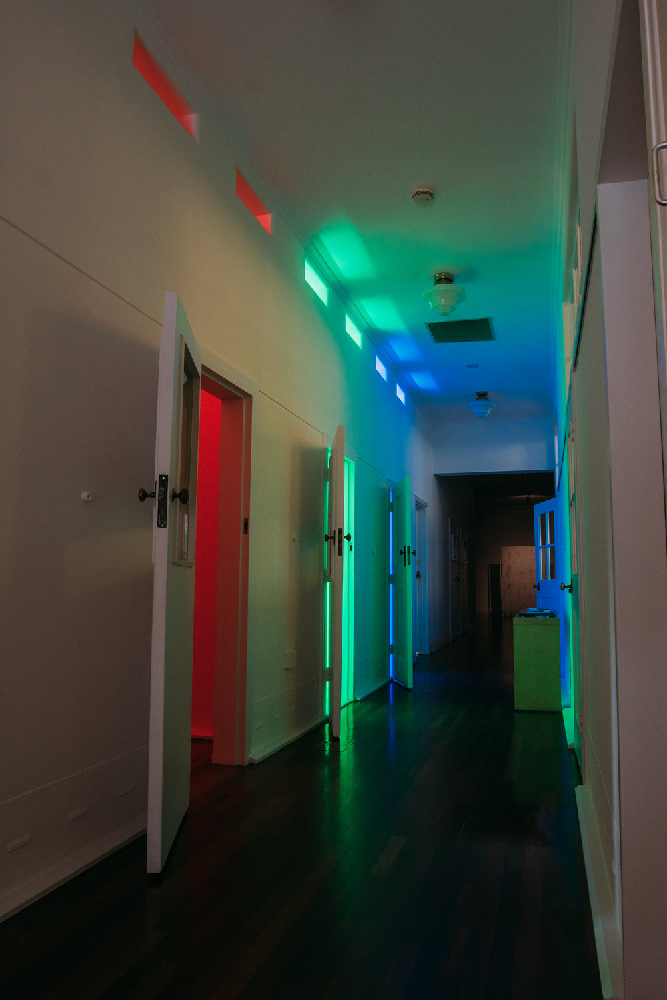
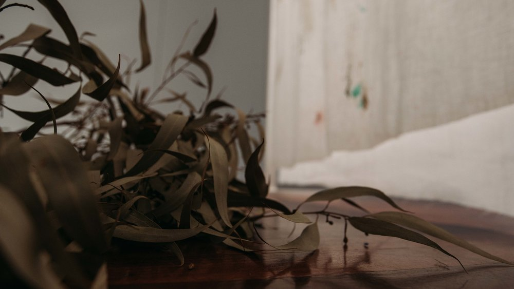
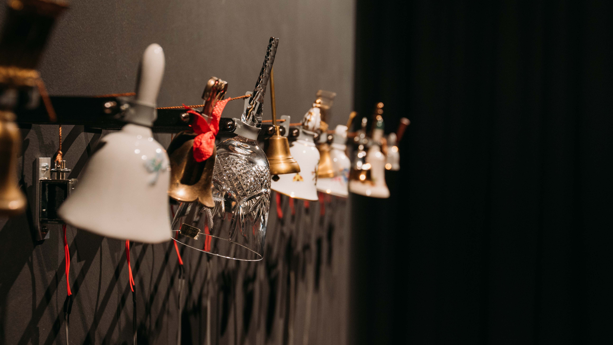

Every museum makes noise – the footsteps on floorboards, humming air-conditioning, the whispers of visitors. From the moment you arrive at Heathcote, you are assaulted by sound. The wind that carries the shrieks of children playing on the pirate ship stirs the Norfolk Island Pines and whips the waves of the river below. “Noise is a sea of sound”, wrote Yasunao Tone, “it is pure frequency uncontaminated by symbolisation”. The word noise comes via the Latin root nauseam. From this we derive ship, noise, nausea and nautical. Noise’s origins lie in sickness and the sea. These find their nexus at Heathcote.
Heathcote is not a typical art gallery. Your first clues upon entering are the cramped rooms to your left. These were once the cells where new patients awaited admission to the Heathcote Hospital. This architecture is not that of an ostentatious palace of art, it was built to permit internal control and to render visible those inside. It is not a place to see but to be seen. For this reason, Heathcote is a Gallery uniquely attuned to the logic of noise. Where most galleries offer visitors a place from which to claim a perspective, based on the idea of vision requiring distance, here you can be immersed in the world. Noise is not directional, but rather chaotic – sounds come to us, whether or not we seek them out.

Zora Kreuzer’s work creates three spatial environments, converging colour, movement and time. These works are an absolute part of the space, reaching to and reflecting from every surface. The reverberation of noise and flickering of the neon tubes restate and destabilize the internal architecture, enveloping the visitor in Kreuzer’s distinctive visual language of light and colour.
In these cells, and in the other corners of Heathcote Gallery, sound does not behave as it does in the hard, cubic voids of other galleries. Sound does not echo around, but instead creeps from space to space, bumping into other sounds and allowing them to interfere and merge in productive ways.

Lyndon Blue embraces this, with a spatialised installation that considers the emotive and psychological properties of sound. Multiple auditory streams give the impression of a sound source located in three-dimensional space. Moving around the work, the visitor falls in and out of pools of silence. Like the breaths that punctuate speech, these find potential in the emptiness of space and sound - reminding us of our physically located bodies, our place in the world.
Elise Reitze, too, locates her work in the physical, returning to the theme of waves and the relationship of noise to the ocean. If we understand noise as irregular vibrations in air, we can see it rides this medium as a surfer rides a wave. Noise, like the surfer, is not the origin of the effort, but is taken up in the motion of an external force. Reitze’s work draws our attention to the noise present in all forms of mediation.

Rebecca Orchard’s work moves us from the intimacy of the personal to consider the wider ecosphere. Her large-scale painting on fabric echoes the forms and flows in the natural world surrounding Point Heathcote. The enveloping folds of the painting cocoon the accompanying sound piece, as if woven together. This work responds to Bruno Latour’s call to be more sensitive, more responsive to the Earth we inhabit. It aligns sound with biological cycles, making audible “the loops of feeling, action, and thinking that weave us into the fabric of existence.”
Howard Melnyczuk’s work also breeds the ideas of noise and environment, drawing together the other works in the main space by actively listening to them. Interpreting its audio environment, the generative computational work mutates its genetic structure to build an evolving visual representation. In this way, it forms a memory – having heard a sound once, the repetition of this sound will not alter the algorithm’s genetic code. It at once creates an image that expresses the noises in the room and creates an archive of their histories. In this way, we could think of it as an adaptable, self-contained museum.

Phil Gamblen’s work also speaks of memory. The artist has created an intimate assemblage, made up of small bells from the personal collection of his late mother. It draws on our history of the bell as the creator of communities, through music, prayer or timekeeping. The solenoid-driven ringing of Bells produces a complex network of relations between light, materials and different sounds. A museum’s collection tells us what we value as a culture. Gamblen’s work reminds us that this need not be defined by the state, institutions or wealthy individuals, but can instead be personal, restorative and communal.